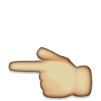
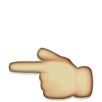

Responsive design has been a blessing to web crafters everywhere. The web, however, was meant to be read, not squished. jquery.wanker.js is a tiny (549 bytes minified) jQuery plugin that reveals a public service announcement when people start excessively resizing their desktop browser as they try to see your responsive breakpoints.
jquery.wanker.js is the perfect easter egg plugin for designers, photographers, writers, and anyone else with a sense of humor displaying their work on the web wishing their viewers to focus more on their work, and less on the magic of media queries.
See it in action
Resize your browser for more than one second. Go on, we’ll wait. You can also see another live example.
Setup, design, and usage
First, include jQuery and the plugin:
<head>
<script src="/assets/javascript/jquery.min.js"></script>
<script src="/assets/javascript/jquery.wanker.min.js"></script>
</head>Write a public service announcement:
<div class="wanker" data-wanker>
<div class="wanker-content">
<h1>The web was meant to be read, not squished.</h1>
<p>Prevent excessive browser resizing and get people back to reading.</p>
<p>Download <a href="https://github.com/migreyes/jquery.wanker">jquery.wanker.js on GitHub</a>.</p>
</div>
</div>Design the message, and hide it by default:
.wanker {
/* Full-screen takeover… */
background: #000;
color: #FFF;
display: none;
height: 100%;
left: 0;
position: fixed;
top: 0;
width: 100%;
z-index: 2014;
}
.wanker-content {
/* Additional design… */
}Last, just call the wanker() function on your design.
$(function() {
$('[data-wanker]').wanker();
});Want the message to start sooner and last longer?
$(function() {
// Customize the delay or duration defined in milliseconds
$('[data-wanker]').wanker({delay: 0, duration: 5000});
});Get it now
Fork me on GitHub, or get the minified version now.
Spread the good word
Tweet about jquery.wanker.js on Twitter.
Colophon
jquery.wanker.js was writen in CoffeeScript by Mig Reyes, a graphic designer at Basecamp who cares a lot about words on the web.
 
